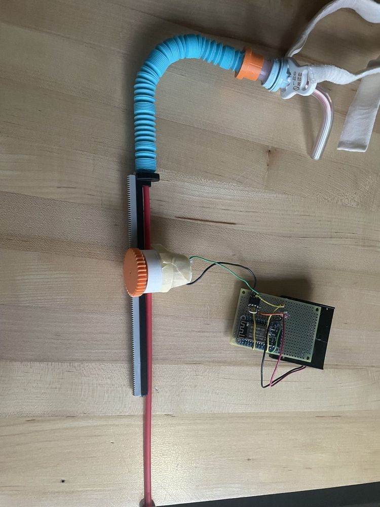
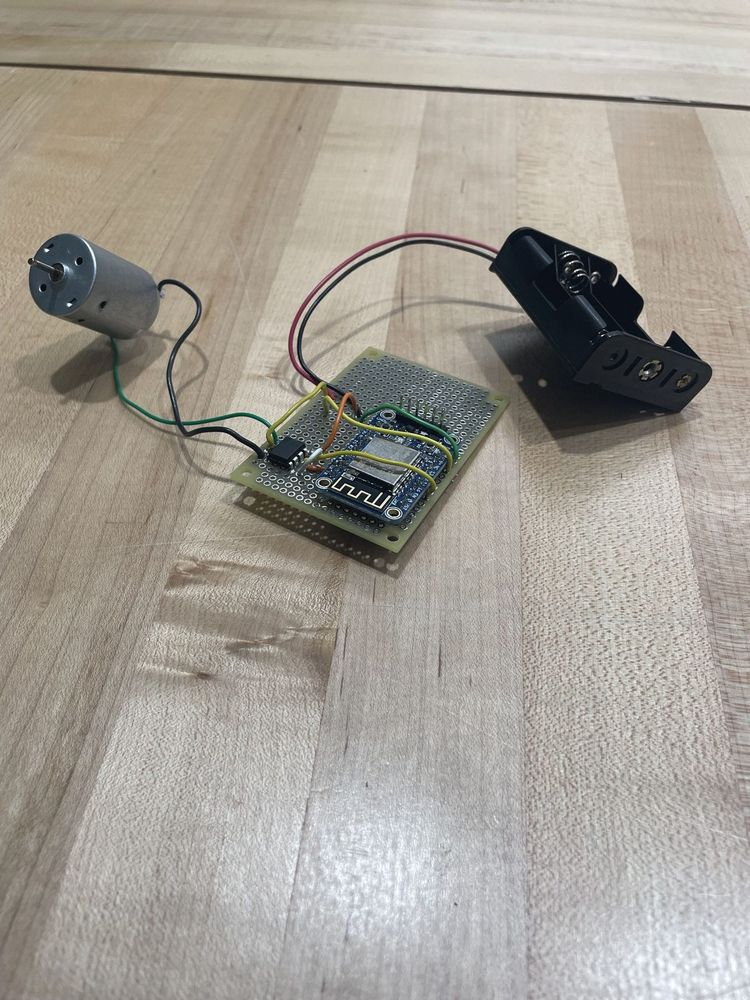

Mechatronics & Leadership
Automatic Tracheostomy Suctioning System
People with tracheostomies need their airway suctioned regularly to clear secretions, a frequent task that falls on caregivers. The objective was to automate it with a device that advances a suction catheter into the tracheostomy tube on its own. As the senior capstone team lead, I ran meetings, the project schedule, and the patent and prior-device research, and I owned the hardware stack end to end: component selection, electronics, mechanical design, and 3D-printed prototype iterations in SolidWorks. In the resulting design, a 3D-printed rack and pinion drives the catheter along a rail toward the tube (Figure 1). That drive is powered by a DC motor through an H-bridge, which an ESP-12S microcontroller controls while streaming device data over Wi-Fi to an app interface built by teammates (Figure 2, Table 1). By the end of the semester, the device was a partially working prototype, so it was not evaluated against the suctioning task itself. It does establish the drive mechanism and electronics that a next iteration would refine and test.


| Part | Detail |
|---|---|
| Actuation | DC motor through an H-bridge, driving a 3D-printed rack and pinion |
| Controller | ESP-12S microcontroller |
| Connectivity | Wi-Fi data stream to a team-built app interface |
| Mechanical parts | Designed in SolidWorks, 3D printed |
| Status | Partially working prototype |